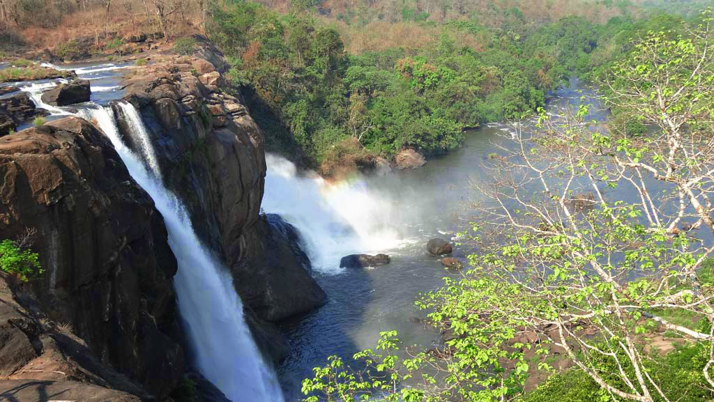
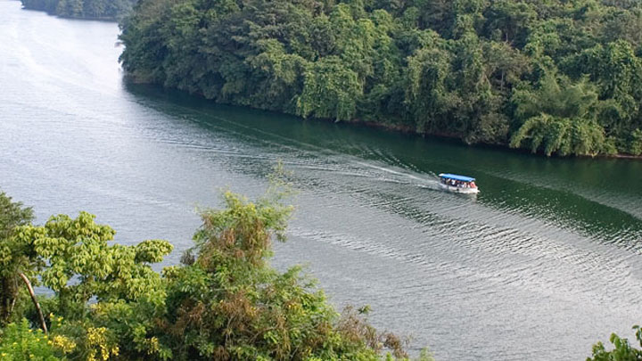

Athirappally Waterfalls
Athirappally and Vazhachal are among the most majestic waterfalls in Kerala. These picturesque locations have attracted people for ages with their lush greenery and stunning views. At Athirappally, one can see water crashing into the Chalakkudy river after an 80 ft. journey. A cool spray takes over the terrain and people are left enchanted at this natural wonder that presents a stunning backdrop. Vazhachal has exotic fauna on display that has people forming a beeline to visit throughout the year. Rare bird sightings, including rare species of the hornbill, make it a bird lover’s paradise. The natural beauty presents an ideal shooting location that will surely mesmerise any who sees it.
Thrissur Pooram

A resplendent festival celebrated with a grand display of caparisoned elephants, dazzling parasols, and percussion music, the Thrissur Pooram is a magnificent spectacle merging the spiritual and cultural essence of Kerala. Celebrated in the Malayalam month of medam (April-May), the pooram is held at the Thekkinkadu Maidanam in Thrissur. Considered to be the mother of all poorams, this yearly temple festival was the brain child of Shakthan Thampuran, the Maharaja of Kochi, who organised the festival with the participation of 10 temples (Paramekkavu, Thiruvambadi Kanimangalam, Karamucku, Laloor, Choorakottukara, Panamukkampally, Ayyanthole, Chembukkavu, Neythilakavu). The festival sports an enthralling line-up of vibrantly decked up elephants and is marked by the kudamattom ceremony. Involving swift and rhythmic changing of brightly coloured and sequined parasols, the kudamattom ceremony is one among the highlights and is a keenly watched event. Another high point is the ilanjithara melam, a highly bewitching performance of traditional instruments which lifts the thousands gathered to a state of euphoria and bliss. Around 250 odd artistes participate in this traditional orchestra led by chenda artistes and the spirit is mirrored by the thousands of spectators who wave their hands in accordance to the rhythm generated by the chenda, kurumkuzhal, kombu and elathalam (traditional instruments of Kerala). The finale is marked by a grand fireworks show.
Punnathoor Kotta

Over forty elephants are groomed at the Punnathoor Kotta. Many elephants are brought as ritual offering to the temple. You can spend a whole day with these huge mammals here. Watching the naughty baby elephants' playful antics is an entertaining experience. The place provides you an opportunity to watch how the sick elephants are medically treated in the traditional manner. One can also watch the training given to the elephants for various ritualistic performances. Remember you are in the land where people worship the elephant-faced god Lord Ganapathy. Groomimg elephants were considered a status symbol. With the decay of the joint family system, supporting elephants became a financial burden for many families. Gradually various temple managements took the charge of looking after these animals. Anyhow, even today elephants play a key role in Kerala's fairs and festivals.
Kerala Kalamandalam

Kerala Kalamandalam has, for decades, been regarded as the most prestigious Kathakali school in the entire world. This legendary school of art is located in Cheruthuruthy and was originally set up by the famous poet of Malayalam, Vallathol Narayana Menon. The story goes that he recognised a subtle decrease in the interest people had in Kathakali and other traditional art forms and thus started the venture. Today, the Kalamandalam is the foremost proponent of a variety of traditional performing art forms that include Mohiniyattam, Kutiyattam, Thullal and Nangiarkoothu. It is also an official deemed University for Art and Culture. Founded in 1930 along the banks of the Nila (Bharathapuzha) River in Thrissur District, its ambience has assisted and nurtured Kerala’s traditional art forms for nearly a century. Performances and classes are regularly held in Kalamandalam, fostered by its quaint charm. Eminent artists from across the state and beyond perform regularly at its famous dance theatre, Koothambalam. Interestingly, it is the only one of its kind to be built outside a Temple complex. The Koothambalam’s granite pillars are famous for having one hundred and eight karanas (dance-poses) inscribed on them. Watching recitals in these hallowed halls is an ethereal experience.
Peechi-Vazhani Wildlife Sanctuary
The Peechi-Vazhani Wildlife Sanctuary is the ultimate destination for anyone enamoured with the intrinsic beauty of nature. Sprawling over a 125 sq.km complex, it lies about 20 km east of Thrissur. It is situated in the catchment area of the Peechi and Vazhani Dams. It is part of the Palapilli-Nelliampathy forests and forms the northern boundary of the Chimmini Wildlife Sanctuary. The Peechi-Vazhani Sanctuary is blessed with many a picnic spot along with a plethora of boating options. The highest point here is the 923 m high Ponmudi which offers an excellent view of the underlying valley. There are more than 50 different kinds of orchids, exotic medicinal plants, teak and rosewood here. One can see over 25 species of mammals including the leopard, tiger, Sambar, deer, Spotted Deer, Indian Bison and Asian Elephant. More than 100 species of birds and several species of snakes and lizards are also found here.